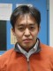

スタッフ - 研究協力者
博士後期課程３年 -博士前期課程２年 - 博士前期課程１年
学部Ⅰ部 - 学部Ⅱ部 - 研究生- 卒業生
■スタッフ
 |
森田 良文 (教授)
|
| E-mail: morita@nitech.ac.jp |

 |
佐藤 徳孝 (助教) |

鈴木 恵美子 (秘書)
Emiko Suzuki
■博士後期課程1年
|  | 犬塚 秀紀 |
■博士前期課程2年
 |
伊藤 雅俊 |
 |
兼子 峻弥 |
 |
澤井 泰彦 |
 |
柴垣 浩明 |
 |
武市 崚佑 |
 |
森田 大輝 |
 |
山内 大地 |
 |
山田 彩加 |
■博士前期課程1年
 |
浅見 瞭 |
 |
五十嵐 知真 |
 |
北村 瑞紀 |
 |
武井 翔 |
 |
服部 仁美 |
 |
TRAN DINH PHAP |
 |
渡邉 寛直 |
 |
中西 朋也 |
 |
王 孟蘇 |
■学部Ⅰ部
 |
安藤 晃平 |
 |
大岡 賢二 |
 |
加藤 貴之 |
 |
木谷 真 |
 |
斎藤 大耀 |
 |
杉山 広樹 |
 |
藤井 達也 |
 |
横谷 知基 |
 |
NGUYEN QUANG VY |
■学部Ⅱ部
 |
國枝 宏明 |
■研究生
 |
趙 越 Zhao Yue |
|
|
■研究協力者
鵜飼 裕之 (学長)
Hiroyuki Ukai

 |
打田 正樹(鈴鹿工業高等専門学校 機械工学科 准教授) Masaki Uchida |

 |
河野 託也 Takuya Kohno |

 |
山崎 一徳(藤田保健衛生大学 医療科学部 臨床工学科，助教) Yamazaki Kazunori |

酒井 昌夫（あいち産業科学技術総合センター） |

Essam Hafez Abdelhameed Abdelghany(Aswan University) |

原 進（名古屋大学 大学院工学研究科 航空宇宙工学専攻・教授）
Susumu Hara

横山 清子（名古屋市立大学大学院芸術工学研究科・教授）
Kiyoko Yokoyama

笹野 弘美（名古屋学院大学 リハビリテーション学部，講師）
Hiromi Sasano

小森 健司（社会医療法人蘇西厚生会 松波総合病院，作業療法士）
Kenji Komori

佐中 孝二（生体機構研究所・所長）
Kouji Sanaka

田邉 浩文（湘南医療大学 リハビリテーション学科（作業療法学専攻）教授，作業療法士，救急救命士，看護士）
Horofumi Tanabe

酒井 義人（国立長寿医療研究センター整形外科，整形外科医）
Yoshihito Sakai

伊藤 忠（愛知県三河青い鳥医療療育センター，理学療法士）
Tadashi Ito

平井 達也（いしい外科 三好クリニック リハビリテーション部，理学療法士）
Tatsuya Hirai

竹河 誠（エバーファイン，作業療法士）
Makoto Takekawa
■卒業生